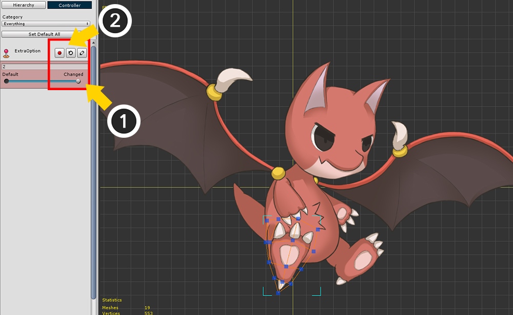

AnyPortrait > Manual > Switching Rendering Order and Images
Switching Rendering Order and Images
1.3.4
Sometimes you need to switch the rendering order of the mesh while the animation plays or the game is running.
Or, you may need to switch images without a script.
Unlike other modifiers, these features are "no continuity".
So these two functions need to be set differently from other modifiers.
In AnyPortrait, this is called the "Extra option".
Controlling the Rendering Order with a Control Parameter
(1) Add a Control Parameter. (It is named "ExtraOption" as an example.)
(2) Select the Mesh Group.
(3) Select the Modifier tab and press the Add Modifier button.
(4) Select the "Morph (Controller)" modifier or "Transform (Controller)" modifier.
There are six types of modifiers that can replace the rendering order and images.
- Transform (Controller)
- Transform (Animation)
- Morph (Controller)
- Morph (Animation)
- Color Only (Controller)
- Color Only (Animation)
It is also possible to change the rendering order for child mesh groups.
However, since the Morph modifier only applies to meshes, we recommend using the Transform modifier or the Color Only modifier in this case.

(1) Select the Mesh whose rendering order you want to change.
(2) Press the "Record Key" button of the Control Parameter to register the Mesh in the modifier.

(1) Move the slider of the Control Parameter, and (2) Generate the second key.

(1) Activate the Extra option by pressing the "Extra Option" button on the modifier setting screen.

(1) Turn on Edit mode. (Shortcut: A )
(2) At the top of the screen, press the "Set" button of the Extra to open the Extra properties dialog.
In order to activate the Extra option, you have to go through three activation steps.
- Step 1: Activate the Modifier's Extra option
- Step 2: Activate the Extra option in the Key or Keyframe of the Control Parameter for the selected mesh
- Step 3: Activate for changing the Rendering Order (depth) or changing the Image
Step 1 above has been activated, so you need to perform steps 2 and 3 below.
(1) Press "Extra Option Off" button to switch to "Extra Option On" state. (Step 2)
(2) Press the "Depth Option Off" button to switch to the "Depth Option On" state. (Step 3)

(1) Depth can be changed by clicking the "+" or "-" button.
Alternatively, you can change the rendering order by changing the value of the Delta Depth.
(2) In this example, the leg is moved backward by moving the Depth value by -2.
In the list, not all Mesh or Mesh Groups appear, only objects that can change the rendering order appear.
Sub Mesh groups as well as Meshes can also be reordered.
However, Clipped meshes are not movable.
The basic screen configuration of the Extra Properties dialog is as follows.
1. Extra Option button : Turns the Extra option for the current key on or off.
2. Offset : Sets the range to which the Extra option is applied. The closer the value is to 1, the wider the range will be.
3. Depth, Image tab : You can set whether to change the rendering order or replace the image. It is also possible to specify at the same time.
4. Depth Option button : Turns Depth Option on or off when the Depth tab is selected.
5. Change Depth button and input box : You can change the rendering order.
6. List of objects whose rendering order changes : You can see the current Depth with an arrow, along with a list of mesh and mesh groups for which you can change the rendering order.
7. Close button : Closes the dialog box.

Now you can see that moving the slider of the control parameter changes the rendering order of the leg mesh.
Switching images with control parameters

Add a new image for testing.
The structure of Atlas should be similar.
Let's change the image of the head mesh this time.
(1) Select Head mesh.
(2) Press the "Add to Keys" button to add meshes to this modifier and control parameters.

With the mesh selected and Edit mode on, proceed as follows:
(1) Press the Extra Set button at the top of the screen.
(2) Press the "Extra Option" button to turn it on.
(3) Select the "Image" tab.
(4) Press the "Image Option" button to turn it on.
(5) Press the "Select Image" button.

Select the image you want to change and press the Select button.

When an image is selected, the image is registered in the "Changed" slot, and you can actually see that the image of the head mesh has changed.
The screen configuration for switching images in the Extra Properties dialog box is as follows.
1. Image Option button : When the Image tab is on, toggles the image switching setting on or off.
2. Original / Changed Slot : Images before and after change are displayed.
3. Select Image button : You can select which image to switch to.
4. Reset Image button : Release the selected image.

Moving the slider of the control parameter changes the image of the head mesh.
Applying Extra Options to an Animation

With the Morph (Animation) or Transform (Animation) modifiers, you can change the rendering order or change the image by applying Extra settings in the animation.
Before creating the animation, turn on the Extra Option in the Modifier Settings.
Alternatively, you can activate it by (1) selecting the timeline layer and (2) pressing the Extra Option button on the animation work screen.
With the animation editing mode on, (1) select the keyframe.
(2) Press Set button of Extra option.
(If Edit mode is off, you can not press the Set button.)

The rest of the procedure is the same as using the control parameters.
Let's review the process of changing the image as an example.
(1) Press the Extra Option button to turn it on.
(2) Select the Image tab.
(3) Press the Image Option button to turn it on.
(4) Press the Select Image button to select the image to be switched.
You can now see the image change in real time as the animation plays.
The screen configuration of the Extra Properties dialog box in the animation is slightly different.
1. Target Frame
: The position of the currently selected keyframe is displayed as a button.
Press the Left and Right buttons to move to the previous or next keyframe.
Pressing the number button moves the animation slider to the selected keyframe.
2. Offset :
The offset range to which the Extra option applies can be applied to the previous and next keyframe, respectively.
(The reason that the offset for the next keyframe is 0.6 instead of the default value of 0.5 is to make it overlap with the Extra setting range of the next keyframe.)
About Offset of Extra Options
In Extra options, Offset is the range to which the Extra function are applied.
Offset is not required for "continuous" changes such as position, rotation, size, or color.
However, since the Extra option is a "non-contiguous" change, you must set at what point it should be applied.

We have assumed that there is Key A with no Extra options and Key B with Extra options.
If key values such as control parameters or animation keyframes are changed, the results rendered will change.

The offset is the distance from the Key B to which the Extra option is applied.
The larger the offset value, the wider the area, and when the value becomes 1 (the max value), the range extends to Key A.

The offset value is basically 0.5.
In this case, the image will switch between the point of Key A and Key B.

If you set the offset value to 0.2,
The image is switched when the value of the control parameter or animation frame is closer to Key B.
If the offset value is increased to 0.8,
If the value of the control parameter or animation frame moves slightly from Key A, the image will be switched immediately.
For animations, there are two offset values.
You can set offsets for comparison with "previous keyframe" and "next keyframe" respectively.
The two offset values are the same in that the range increases as the value increases, although the direction in which they are applied is different.
However, there is something to be careful about here.
Animation is determined by interpolation weighting by "Animation Curve".
Therefore, the offset is also affected by the shape of the animation curve.
Instead of the position of the frame to be played, it determines whether or not the Extra option is applied based on the interpolation weight by the curve.
(1) Determine the range of the offset with respect to the interpolation weight of the animation curve.
(2) The shape of the animation curve determines from which frame the Extra option will be applied.
Applying Extra Options to multiple objects
1.3.4
From AnyPortrait v1.3.4, it is supported to apply Extra Option to multiple objects at once.
(1) Select multiple meshes registered in the modifier.
(2) With the key of the control parameter or the keyframe of the animation selected, press the Set button at the top of the screen.

You can control the depth of selected meshes at once.
At this time, the depth change value indicated by the yellow arrow is only shown for one of the selected meshes.

If you select another one of the selected meshes from the list, the depth change value of that mesh is displayed.
There are a few things to note at this point.
What is currently shown in the list of Extra Option is "Depth change value of selected objects".
The Extra Option of the currently unselected objects are not shown in this dialog.
Therefore, you should check the results of the Extra Option of different objects in the workspace.
Let's check what happens if the depth values of different objects become the same.

(1) Select one mesh and (2) Set Depth to "Top+10".

(2) Select another mesh and (2) Set it to move to "Top+10" the same.
The depth of the two meshes is the same.
When checking meshes with the same depth, you can see that they are rendered in the original order.
If objects have the same Depth by Extra Option, the rendering order is determined according to the rules below from v1.3.4.
- If they have the same depth, the existing rendering order is applied.
- Requests with increasing Detph take precedence over requests with decreasing Detph.
- Among the depth increase/decrease requests, the one that is processed first is considered to change the depth more in that direction.